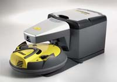
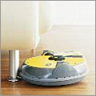
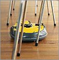
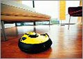
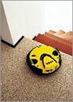
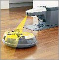
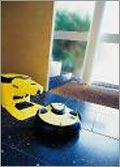

|
 |
Robot cleaner RC 3000 de KARCHER
1300 € Uniquement sur commande |
Ce système de balayage autonome permet de nettoyer vos sols sans surveillance et de façon silencieuse.
Il parcourt ainsi la maison en s'attaquant à l'ensemble de vos sols et est aussi efficace sur un sol dur que sur un tapis épais (jusqu'à 20mm). Lorsque son sac est plein, il retourne de lui-même à sa station pour 2 à 3 minutes afin d'y décharger la salissure aspirée dans un grand sac de 2 litres.
Au niveau autonomie énergétique, là encore, il gère indépendamment son rechargement. En 20 minutes maximum, il repart pour 1 heure d'autonomie.
DéplacementIl se déplace selon le principe du hasard. Déplacement en ligne droite, S'il rencontre un obstacle, il change automatiquement de direction. |
IntelligentSes capteurs lui permettent de se faufiler PARTOUT sans difficulté. |
Il passe partoutSa construction plate lui permet de balayer sous les meubles ( lits, canapés, armoires ... ) |
EscaliersIl est guidé par des détecteurs optiques qui enregistrent la proximité de marches ou d'escaliers et qui lui envoient un signal afin qu'il change de direction. |
Personnalisez le programme de votre compagnonen fonction de vos besoins (surface à nettoyer, mode silencieux, arrêt automatique à la fin d'un cycle...) |
AutonomeAprès le temps de charge, le robot quitte sa station et reprend son balayage. |
Il est équipé d'un balai brosse rotatif et d'un système d'aspiration.
Points forts: